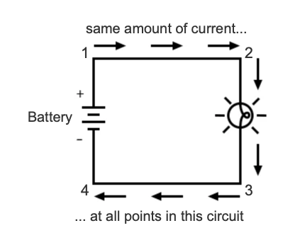
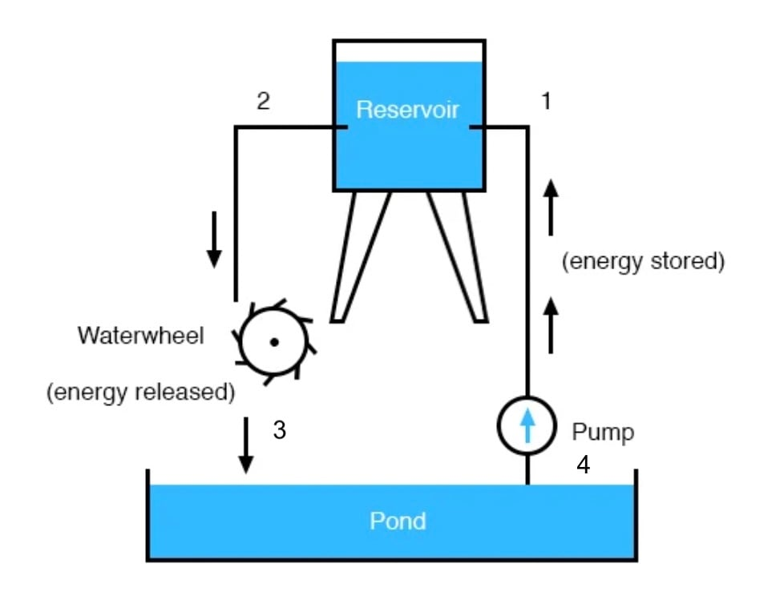

Because it takes energy to force charge to flow against the opposition of resistance, there will be voltage manifested (or “dropped”) between any points in a circuit with resistance between them.
It is important to note that although the amount of current (i.e., the quantity of charge moving past a given point every second) is uniform in a simple circuit, the amount of voltage (potential energy per unit charge) between different sets of points in a single circuit may vary considerably:

Take this circuit as an example. If we label four points in this circuit with the numbers 1, 2, 3, and 4, we will find that the amount of current conducted through the wire between points 1 and 2 is exactly the same as the amount of current conducted through the lamp (between points 2 and 3). This same quantity of current passes through the wire between points 3 and 4, and through the battery (between points 1 and 4).
However, we will find the voltage appearing between any two of these points to be directly proportional to the resistance within the conductive path between those two points, given that the amount of current along any part of the circuit’s path is the same (which, for this simple circuit, it is).
In a normal lamp circuit, the resistance of a lamp will be much greater than the resistance of the connecting wires, so we should expect to see a substantial amount of voltage between points 2 and 3, with very little between points 1 and 2, or between 3 and 4. The voltage between points 1 and 4, of course, will be the full amount of “force” offered by the battery, which will be only slightly greater than the voltage across the lamp (between points 2 and 3).
This, again, is analogous to the water reservoir system:

Between points 2 and 3, where the falling water is releasing energy at the water-wheel, there is a difference of pressure between the two points, reflecting the opposition to the flow of water through the water-wheel. From point 1 to point 2, or from point 3 to point 4, where water is flowing freely through reservoirs with little opposition, there is little or no difference of pressure (no potential energy). However, the rate of water flow in this continuous system is the same everywhere (assuming the water levels in both pond and reservoir are unchanging): through the pump, through the water-wheel, and through all the pipes.
So it is with simple electric circuits: current flow is the same at every point in the circuit, although voltages may differ between different sets of points.